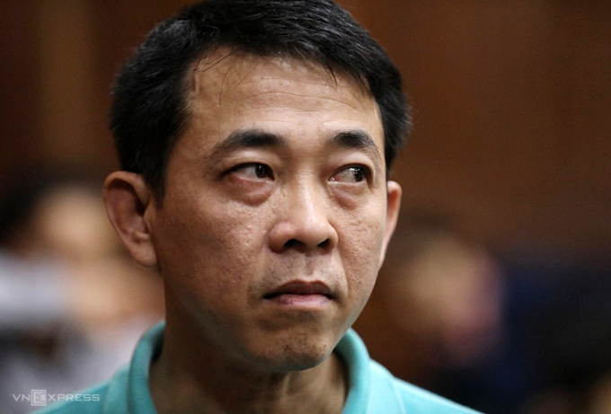

7 loại thuốc giả trong vụ VN Pharma được 'dọn đường' cấp phép thế nào?
VKSND Tối cao cho rằng các hồ sơ thuốc giả nhãn mác Health 2000 Canada được "ưu tiên" thẩm định trước 926 hồ sơ khác; 4 lần "qua cửa" xét duyệt dù thiếu mọi tiêu chí quan trọng. Ciprofloxacin là thuốc kháng sinh tổng hợp được Cục Quản lý Thực phẩm và Dược phẩm Mỹ (FDA) xếp vào danh sách "cảnh báo hộp đen", tức bán theo đơn, do "chứa rủi ro nghiêm trọng hoặc đe dọa tính mạng, gây tàn tật, dẫn đến nhập viện hoặc tử vong, hoặc dị tật bẩm sinh" nếu không dùng đúng cách. Trong khi đó, ở Việt Nam, năm 2009-2014, hàng trăm nghìn hộp Ciprofloxacin giả đã được 5 doanh nghiệp nội địa nhập mua và bán trên thị trường, trong vụ án liên quan Công ty VN Pharma. Cáo trạng ra ngày 7/1 của VKSND Tối cao xác định, tổng lượng thuốc giả trong vụ án lên tới 2,4 triệu hộp, trị giá khoảng 149 tỷ đồng. Ciprofloxacin là một trong 7 loại thuốc giả được một số bị can nguyên là cán bộ Cục Quản lý Dược "dọn đường" cấp phép lưu hành.Nhà chức trách cho rằng kế hoạch phạm tội có thể đã nảy sinh từ 15 năm trước, khi Việt kiều quốc tịch Canada Nguyễn Lê Xuân Khang tiếp cận ông Lê Văn Sơn, Giám đốc Công ty CP Dược phẩm Trung ương II (Codupha). Sau khi giới thiệu về Công ty Health 2000 Canada và tự nhận là đại diện của công ty này tại Việt Nam, Khang ngỏ ý nhờ Codupha đứng tên đăng ký và nộp hồ sơ đề nghị Cục Quản lý Dược cấp Giấy phép lưu hành sản phẩm (visa) cho 5 thuốc, nhãn mác Health 2000 Canada. Khang cung cấp hồ sơ cho Codupha, gồm Giấy chứng nhận lưu hành tự do FSC và Giấy chứng nhận thực hành sản xuất tốt GMP do Chính phủ và Bộ Y tế Canada cấp. Thực chất, các giấy tờ này đều là giả mạo. Nhận lời nhờ vả của Khang, ngày 25/2/2008, Công ty Codupha làm thủ tục với Cục Quản lý Dược xin cấp số đăng ký cho 5 loại thuốc: Extrafovir, Kagerox-250, Kafotax-1000, MGP Axinex-1000 và MGP Moxinase-625, đều là thuốc kháng sinh, chống nhiễm khuẩn nặng. Hồ sơ 5 thuốc trên được 12 chuyên gia của Cục Quản lý Dược thẩm định lần đầu và phản hồi FSC, GMP đều không hợp lệ. "FSC không ghi tên địa chỉ nhà sản xuất, không rõ chức danh, tên đầy đủ của người ký. Cơ quan cấp FSC, không rõ có thẩm quyền cấp FSC hay không, GMP không ghi ngày tháng năm cấp", cáo trạng nêu. Các hồ sơ không được hợp pháp hóa lãnh sự, GMP đều không có chứng nhận dây chuyền sản xuất đạt GMP - WHO... Nhận biên bản thẩm định có các nội dung không đạt như trên, bà Phạm Hồng Châu, Trưởng Phòng đăng ký thuốc (Cục Quản lý Dược) vẫn kết luận, đồng ý cho Codupha bổ sung tài liệu. Đã bổ sung, hồ sơ về 5 loại thuốc này của Codupha vẫn lặp lại những lỗi y hệt. Nhưng trong lần thẩm định thứ hai, hồ sơ đăng ký được chấp thuận, cơ quan tố tụng cáo buộc. Được ông Trương Quốc Cường, khi đó là Cục trưởng Quản lý Dược, Chủ tịch Hội đồng xét duyệt thuốc (Bộ Y tế) ký quyết định, tháng 8/2009, 5 loại thuốc Health 2000 Canada giả được cấp visa vào Việt Nam, hiệu lực 5 năm. Hai tháng sau, hàng chục nghìn hộp thuốc giả đầu tiên vào Việt Nam, qua những hợp đồng giữa Khang và 5 doanh nghiệp kinh doanh dược phẩm trong nước. Đầu năm 2010, Khang tiếp cận doanh nghiệp thứ hai, Công ty TNHH Dược phẩm Vimedimex, nhờ đứng tên đăng ký giúp 2 loại thuốc khác là H2K Ciprofloxacin và H2K Levofloxacin cũng mang nhãn mác Health 2000 Canada, với các tài liệu FSC và GMP đều giả mạo. Nhận lời, ngày 16/5/2010, Vimedimex nộp hồ sơ đăng ký 2 loại thuốc này tại Cục Quản lý Dược. Hai tháng sau, Vimedimex làm công văn gửi Cục đề nghị thẩm định sớm 2 thuốc của họ, có mã số "xếp hàng" thẩm định là 9408 và 9409. Lúc này, tại Cục Quản lý Dược, nhóm chuyên gia thẩm định đang xem xét các hồ sơ đến mã số 8482, song một ngày sau khi nhận công văn của Vimedimex, ông Trương Quốc Cường có bút phê "K/c c Châu" (Kính chuyển chị Châu) và bà Châu tiếp tục bút phê cho tổ chuyên gia thẩm định. Kết quả, theo cáo buộc của VKS, hồ sơ 2 loại thuốc giả do Vimedimex nộp, nhảy liền 926 bậc và được ưu tiên thẩm định trước.
 Ảnh: Cựu thứ trưởng Y tế Trương Quốc Cường trong buổi làm việc tại Đà Nẫng, 14/1/2021
Ảnh: Cựu thứ trưởng Y tế Trương Quốc Cường trong buổi làm việc tại Đà Nẫng, 14/1/2021
"Bộ Y tế và Cục Quản lý Dược không có chủ trương hay quy định nào cho phép ưu tiên đưa hồ sơ đăng ký thuốc của doanh nghiệp ra thẩm định sớm, trừ trường hợp có dịch bệnh sẽ có quyết định của Bộ trưởng Bộ Y tế", cáo trạng nêu. Do đó, việc làm của ông Cường bị VKS cáo buộc là "không đúng quy định", và "thể hiện sự ưu tiên không có lý do chính đáng" với Vimedimex để 2 hồ sơ được thẩm định "sớm trước gần 1.000 hồ sơ thuốc khác". Khi thẩm định, phát hiện hồ sơ của Vimedimex mắc các lỗi giống hệt như 5 hồ sơ do Codupha nộp, cả 3 chuyên gia pháp chế đều thống nhất không cấp số đăng ký cho 2 loại thuốc này. Ngay sau đó, hồ sơ của Vimedimex tại Cục Quản lý Dược bỗng được một "người bí mật" bổ sung trái quy định các tài liệu còn thiếu để khắc phục các lỗi chuyên gia thẩm định đã ghi trong biên bản. Phần kết luận của nhóm chuyên gia bị bà Nguyễn Thị Thu Thuỷ (Phó phòng Quản lý giá thuốc, Cục Quản lý Dược) trực tiếp tẩy xoá. Quyết định "không cấp số đăng ký" trước đó, được bà Thuỷ biến thành "yêu cầu bổ sung hồ sơ". Cơ quan điều tra cho rằng biên bản thẩm định này nêu rất nhiều lỗi về 2 hồ sơ thuốc của Vimedimex; đề xuất của nhóm thẩm định mâu thuẫn, tẩy xóa nhưng bà Châu vẫn kết luận biên bản, đồng ý cho Vimedimex "bổ sung hồ sơ". Dù bổ sung, hồ sơ của Vimedimex vẫn mắc các lỗi giống như ban đầu. Nhưng các chuyên gia thẩm định đều nhanh chóng đồng ý cho cấp số đăng ký và đưa cho bà Châu ký. Biên bản thẩm định này, theo quy định, phải được được gửi đến các thành viên Hội động xét duyệt thuốc (Bộ Y tế) ít nhất 5 ngày làm việc trước ngày họp. Năm 2010, cuộc họp Hội đồng diễn ra ngày 25/11 nhưng biên bản thẩm định do bà Châu ký lại được gửi trước chỉ có 3 ngày. Được Hội đồng chấp thuận, ngày 23/12/2010, ông Cường ký công bố 214 thuốc nước ngoài được cấp Giấy chứng nhận lưu hành, hiệu lực 5 năm, trong đó có H2K Ciprofloxacin và H2K Levofloxacin mang nhãn Health 2000 Canada.
Ảnh: Một trong 14 bị can, Nguyễn Minh Hùng, cựu Chủ tịch HĐQT, Tổng giám đốc VN Pharma lĩnh 17 năm tù tháng 10/2019 trong giai đoạn 1 của vụ án.Cáo trạng của VKSND Tối cao kết luận, sau khi 7 thuốc trên được cấp số đăng ký, Khang cùng các đồng phạm và Công ty VN Pharma, Công ty H&C buôn bán, nhập khẩu, thông quan một số lượng lớn vào Việt Nam. Trong đó, hơn 800.000 hộp thuốc, tổng trị giá hơn 1, 2 triệu USD, tương đương 26 tỷ đồng, được VN Pharma nhập, sau đó nâng khống thành hơn 2,5 triệu USD, tương đương 54 tỷ đồng. Số thuốc giả này được Công ty VN Pharma bán cho các doanh nghiệp, bệnh viện, nhà thuốc tổng hơn 600.000 hộp, thu lợi bất chính hơn 31,5 tỷ đồng. Kết quả tương trợ tư pháp từ Canada xác định, Công ty Health 2000 không có nhà máy sản xuất thuốc tại Canada và không sản xuất bất kỳ loại dược phẩm nào. "Health 2000 không có Văn phòng đại diện tại Việt Nam". Các cơ quan chức năng của Canada khẳng định "không cấp FSC cho các thuốc nhãn mác Health 2000 Canada, không cấp bất kỳ Giấy phép sản xuất thuốc và GMP nào cho nhà máy của Health 2000", cáo trạng nêu. Cũng liên quan các giấy phép FSC và GMP, ông Cao Minh Quang, khi đó là thứ trưởng Bộ Y tế, bị cáo buộc ký công văn nội dung "Các giấy tờ pháp lý (FSC và GMP) trong hồ sơ thuốc không bắt buộc phải hợp pháp hoá lãnh sự". Ông Quang thừa nhận điều này là trái quy định pháp luật. Do thời hạn điều tra đã hết, VKSND Tối cao kiến nghị "cần tiếp tục làm rõ trách nhiệm của ông Quang" để xem xét xử lý theo pháp luật. Với ông Lê Văn Sơn và các các nhân khác tại Công ty Codupha đã ký đơn giúp Khang nộp hồ sơ đăng ký 5 loại thuốc giả, tài liệu điều tra hiện chưa đủ căn cứ kết luận những người này biết đó là hồ sơ giả. Vì thế, cơ quan điều tra chưa đủ căn cứ xử lý hình sự. Nguyễn Lê Xuân Khang, kẻ mở màn của toàn bộ vụ án, đang bỏ trốn, cơ quan điều tra sẽ tiếp tục xử lý khi bắt được. Liên quan vụ án, ông Trương Quốc Cường (cựu cục trưởng Cục Quản lý dược, cựu thứ trưởng Y tế) cùng Lê Đình Thanh (cựu cán bộ hải quan TP HCM) và Nguyễn Việt Hùng (cựu cục phó Quản lý Dược) bị truy tố về tội Thiếu trách nhiệm gây hậu quả nghiêm trọng, theo khoản 2, Điều 285, Bộ luật Hình sự năm1999. Nguyễn Thị Thu Thủy (cựu phó phòng thuộc Cục Quản lý Dược) và Phạm Hồng Châu (cựu trưởng Phòng đăng ký thuốc) bị truy tố về tội Lợi dụng chức vụ, quyền hạn trong khi thi hành công vụ,theo khoản 2, Điều 281, Bộ luật Hình sự năm 1999. 9 người bị truy tố về tội Buôn bán hàng giả là thuốc chữa bệnh, theo điều 157, Bộ luật Hình sự năm 1999: Nguyễn Minh Hùng (cựu chủ tịch HĐQT, Tổng giám đốc Công ty cổ phần VN Pharma) và Võ Mạnh Cường (cựu giám đốc công ty H&C); Nguyễn Trí Nhật, Ngô Anh Quốc (cựu phó tổng giám đốc VN Pharma); Phan Cẩm Loan (cựu phó trưởng phòng Xuất nhập khẩu VN Pharma), Lê Thị Vũ Phương (cựu kế toán VN Pharma); Phạm Anh Kiệt (cựu tổng giám đốc Dược Sài Gòn); Phạm Quỳnh Trang (cựu nhân viên công ty H&C); Nguyễn Thị Quyết (cựu nhân viên VN Pharma).